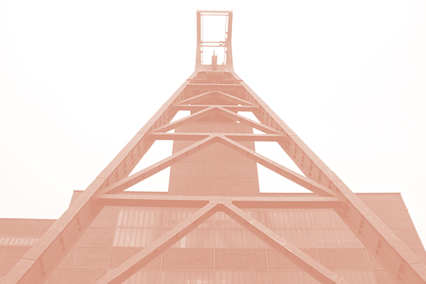
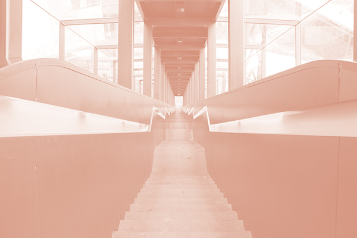

Deelnemers gaan op pad met eigen smartphone en auto per team van maximaal 4 personen door het Ruhrgebied.
Met de smartphone moeten de deelnemers een QR-code scannen per opdracht, en sturen ze de locatie van de opdracht toe naar de organisatie. Sommige opdrachten krijgen de deelnemers via een videogesprek pas als ze de locatie hebben gestuurd. De organisatie controleert of de deelnemers bij alle locaties geweest zijn.
Van de organisatie krijgen de deelnemers een backpack met daarin spullen als, een kaart van het Ruhrgebied, een power bank, een notitieboekje, een pen enzovoort.
Expeditie vindt plaats in het weekend. De organisatie zorgt voor een hotelovernachtingen in een drie sterren hotel, twee keer uitgebreid ontbijtbuffet, twee keer een lunch, drinken en snacks voor onderweg en een gezamenlijk diner op zaterdag.
Zondag wordt afgesloten met een finale spel, met een bijzondere prijs voor de winnaars.